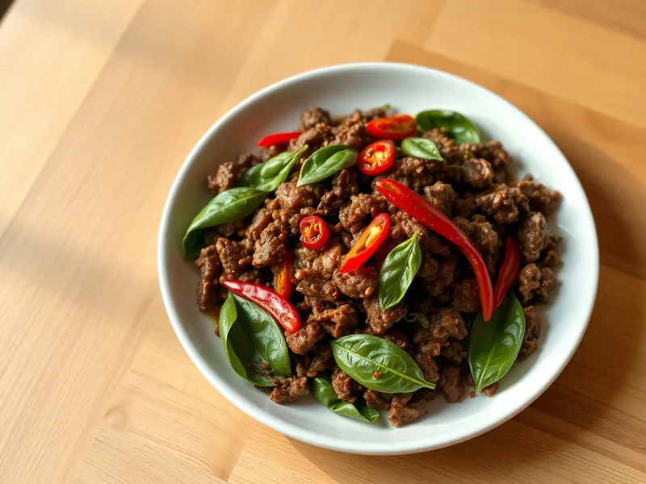

Фарш по-тайски с базиликом (пад кра пао)
Острый тайский говяжий фарш с чесноком, чили и базиликом на сильном огне
15 мин2 порц.528 ккал на порциюБ 28 · Ж 43 · У 7Азиатская кухня
Открыть в приложении: порции, таймеры, список покупок
Продукты на 2 порц.
- Говяжий фарш300 г
- Чеснок3 зуб.
- Перец чили1 шт
- Соевый соус2 ст. л.
- Сахар1 ч. л.
- Вода2 ст. л.
- Базилик1 пучок
- Растительное масло1,5 ст. л.
- Яйцо куриное по желанию2 шт
Как готовить
- Мелко порубите чеснок и чили или разомните их в ступке, 3 минуты.
- Разогрейте масло на сильном огне, обжарьте чеснок с чили 30 секунд до аромата.
- Добавьте фарш и жарьте 5-6 минут, разбивая лопаткой, пока он не станет коричневым и не уйдёт жидкость.
- Влейте соевый соус и воду, всыпьте сахар, жарьте 1 минуту до глянца.
- Снимите с огня и вмешайте листья базилика, они сразу завянут.
- По желанию пожарьте яйца-глазунью на сильном огне 2-3 минуты, до хрустящих краёв и жидкого желтка, и положите сверху.
Совет. Подавайте на отварном рисе. Если любите менее остро, удалите из чили семена.